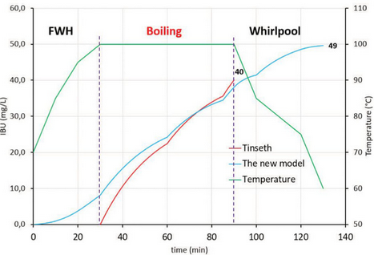

Hops - Revisiting the IBU
By Petr Novotny, Zymurgy, March/April 2018
We all want to make great beer, even on the first attempt. To achieve such a goal we must carefully develop and execute every recipe. Even with limited tools, often nothing more than kitchen scales, a hydrometer or refractometer, and a timer, we still want to able to predict our results.
Our success depends on many calculations and experience with our equipment. Estimating beer bitterness is one of those calculations. The final bitterness of a beer, expressed in International Bittering Units (IBU), depends on many factors: the quantity of hops added, hop varieties used, boil duration, wort temperature, wort density, wort composition, and many others. Even losses to cold break and fermentation play a role.
Hop alpha acids and their products, iso-alpha acids, undertake an extraordinarily complicated journey from the hop cones to our glasses. In this article, I aim to describe this process in detail and demonstrate its relationship to the IBU calculations we use today, as well as to IBU calculations we might use in the future.
What IS an IBU?
The IBU measures the concentration of iso-alpha acids that make up much of what we perceive as bitterness in beer. Iso-alpha acids are produced in hot wort from hop alpha acids through a chemical reaction called isomerization. By definition, 1 IBU is equal to 1 mg of iso-alpha acid per 1 liter of beer.
It is a mistake to strictly equate bitterness and IBUs because perceived bitterness includes many other contributions beyond the IBU itself, such as hop polyphenols, residual sugar. malt composition, and water chemistry. Nonetheless, a beer’s IBU value correlates well with its perceived bitterness and thus remains a good parameter for developing a beer with a desired bitterness level.
One of the most commonly used IBU estimates is based on Glenn Tinseth’s equation, which he published back in 1997.1 Twenty years after this IBU milestone, today’s hopping practices often differ wildly from those used in the late 1990s. Over the last two decades, several new hopping techniques have appeared and earned their place in the brewer’s repertoire. Extensive late hopping, first-wort hopping, and whirlpool hopping are all common practice now.
Most of these techniques employ a considerable amount of hop material that is added at a temperature below the boiling point. By contrast, Tinseth’s equation was developed for boil additions only; it is therefore less effective for these newer hopping techniques, at least without some adjustment.
Brewers typically deal with this reality in one of two ways. The first one is simple — sometimes you can ignore the contributions of no-boil additions or treat them as usual with the equation you already have. The second option is much more complicated and usually employs adjustment constants based on your experience and the recommendations of your choice of brewing software. Both approaches can work in some cases; unfortunately, both can fail in others.
First-Wort Hopping
First-wort hopping (FWH) is the name for adding a large portion of the finishing hops to the boil kettle as the wort is run off from the mash tun or lauter tun. Hops remain in contact with hot wort longer than they would have if they’d been added at the start of the boil. One might, then, expect an increase in alpha acid utilization, but it’s not that simple.
Utilization approaches its maximum at around an hour of boiling, which means that if a FWH addition is followed by a traditional boil of 60 minutes or longer, you can treat it as a regular 60-minute addition. But what if you don’t follow traditional practices? Many brewers like to experiment with timesaving measures, including shorter boils. With today’s high-alpha hop varieties and late-hopping techniques, short boils often make sense. In these cases, the actual temperature conditions of FWH hops could significantly affect the final IBU value.
Late Hopping
Late hopping involves adding a large portion of the hops within the last 30 minutes of the boil to retain greater hop aroma and flavor. Even during a short boil, the alpha acids still undergo significant isomerization, which increases the overall IBUs. You can simply calculate these contributions by the Tinseth equation. But doing so can be insufficient because it ignores the post-boil treatment of the wort. When massive late hopping is used, plenty of alpha acids can survive and further isomerize during cooling and whirlpooling.
Whirlpool Hopping
Whirlpool hopping involves adding a large portion of the hops after the boil while the wort is still warm or hot. Whirlpooling practices differ from one brewer to another. Because of the lower-than-boiling temperature, the rate of the isomerization of alpha acids decreases. If the temperature of the whirlpool is below 60o C (140o F), or the hop addition is small, you can pretty much ignore its contribution.
For many modern IPAs, though, the whirlpool hop addition is not small and cannot be ignored. New England IPAs, for example, are massively hopped in the whirlpool and achieve much of their bitterness after the boil. Some brewing software addresses whirlpool additions via a user-specified factor that expresses whirlpool utilization as a percentage of the same quantity of hops boiled traditionally. Perhaps you have the same question as I had: “How am I supposed to know which factor to use for all possible whirlpool conditions?”
The answer is simple: you can’t! What works for an addition at 85o C (185o F) for 20 minutes won’t work for an addition at 70o C (158o F) for 20 minutes, and so on. Therefore, you must rely on experience with your procedure and adjust according to your observations. Or, you must rely on the experiences of other brewers who use different procedures and equipment; obviously this is an even less dependable option.
Reviewing IBU Calculations
Now, you probably agree with me that neither of these approaches is ideal. The best approach should be reliable, should be general, and should allow the brewer to estimate the IBU level of every possible hop addition (even those that have not yet been developed) consistently and without further need of user-defined factors. Instead of trying to bend the traditional approach to new methods, I took a step back to fundamentals. Focusing on iso-alpha acids in next few paragraphs, I will briefly review where they come from and what affects their final level in beer.
Isomerization
The journey of iso-alpha acids begins in our hops. Hops contain alpha acids that usually make up 4 to 12 percent of their mass. After alpha acids are extracted from hops in hot wort (or water), they undergo isomerization and become iso-alpha acids. Isomerization is believed to be the rate-limiting step of this process.2,3 This means that if you have multiple reactions and/or processes that share the same pathway, the overall rate of the process depends on the rate of the slowest step.
Imagine a road trip on a narrow highway where no passing is possible. Your speed will depend on the slowest car on the road, no matter how fast your car is. Isomerization is a rate-limiting step on the pathway from hop alpha acids to iso-alpha acids in wort that allows us to neglect extraction in the description of the process.
In fact, there is more going on than that, because iso-alpha acids also undergo degradation. 2,3,4 Occasionally, you will find a source that says degradation starts after 60 minutes of boiling. In fact. this unwanted reaction begins when the first iso-alpha acids are formed and ends when all of them have been degraded. What these sources mean to say is that the rate of isomerization is greater than the rate of degradation in the first 60 minutes of the boil, roughly speaking. Thus, iso-alpha acid concentration increases at the beginning, reaches its maximum when the overall rate of isomerization and degradation equals, and then starts to decrease when little alpha acid is left to isomerize and the rate of degradation outpaces that of isomerization.
Maximum iso-alpha acid formation is achieved after 60 to 80 minutes of boil time. This is the reason that a drop in IBUs is usually not much of a concern, but degradation could have negative effects if the boil is allowed to continue. Degradation itself plays an important role in the self-limiting behavior of alpha acid isomerization. It is a natural constraint that makes 100 percent utilization impossible.
Tinseth’s equation assumes isomerization and neglects degradation. The solution takes the form of an exponential function, which is the basis of Tinseth’s formulae. Because it neglects degradation, limits must be forced by artificial correction in the form of a factor that restricts utilization.
But we can go a step further and account for degradation in a form that makes fewer assumptions about the processes and yields more general results. In such a formulation, the chemical pathway of the process has the following reaction scheme:
\[\ce{A -> B -> C}\]
\[\text{alpha acids} \rightarrow \text{iso-alpha acids} \rightarrow \text{degradation products}\]
In terms of chemistry, this process represents one of the most popular problems that every student of chemistry encounters in kinetic classes. This problem forms a set of differential equations that have a mathematical solution. For the sake of simplicity, it is enough to understand that this problem has a relatively simple solution for those who are trained chemists and mathematicians. It is even relatively simple to account for temperature, and necessary data can be found in the literature.2,5 At the end, from the numerical solution of this problem, you can find the desired result: iso-alpha acid concentration. In other words, IBUs.
Losses of IBUs in the brewing process
Unfortunately, our bittering compounds also experience losses, which must take into account. Some iso-alpha acids are lost through adsorption from trub (20 to 30 percent) and adsorption from yeast (10 to 30 percent).6 Therefore, we can expect the final IBU equation to take a general form:
\[ \ce{IBU = (1 – TF) \cdot (1 – YF) \cdot C_B} \]
Where \(\ce{C_B}\) is a concentration of iso-alpha acids after the boil, which is found kinetically as described above. Two unknown factors, \(\ce{YF}\) and \(\ce{TF}\), account for losses in yeast and trub (cold break), respectively. Not surprisingly, our next goal is evaluate those parameters.
This is actually the hardest part of the problem because literature data are very limited. The IBUs lost to adsorption by cold break depends on the amount of trub itself and, therefore, ultimately on wort concentration. This leads us to consider the effect of beer gravity on hop utilization.
At this point, it is reasonable to use Tinseth’s work as the source. In Tinseth’s formulae, this effect is hidden in a relatively complicated power function that can be simplified to a linear function with no harm to overall accuracy. That type of dependency also has support in the literature.5 In this case, the effect of adsorption on cold break can be described as follows:
\[ \mathrm{1 - TF = 1 - 0.028 \cdot ^o P} \]
The last pieces of the puzzle are losses due to the adsorption on yeast biomass. Even with literature data available, it is hard to find a general trend in this matter. For some yeast strains, loss depends on wort gravity (in other words on the amount of yeast biomass), while for other strains, it does not.7
Literature sources agree that losses from yeast biomass can be anywhere from roughly 10 to 30 percent, and most often near 20 to 25 percent. Therefore, it makes the most sense try to match results of a new approach with Tinseth’s formula again, specifically for traditional hopping regimens for which the Tinseth equation is valid. The factor \(\ce{YF}\) was found as a result of such a matching process, and its value of 0.23 agrees well with the expected value of 20 to 25 percent.
This has a couple of consequences. It implies that we might have found an appropriate model because the new method describes the full iso-alpha acid journey. For traditional hopping schemes, the new model yields almost the same result as Tinseth’s method, demonstrating backward compatibility. For less than 60 minutes of boiling, the methods agree to within 2 percent. The strengths of the new method will become apparent when we introduce hop additions below the boiling point and in shorter or longer boils.
In other words, the new method is a generalization of Tinseth data. It is based on a fundamental understanding of the process and is general enough to be used for any hopping scheme without further need for user-defined factors. The chemistry-based form is a backbone of the method. If better literature data become available in future, kinetic parameters can be simply adjusted, and the method would be independent of the Tinseth formula.
Case study
The advantages and strength of this model can be demonstrated with an example of a hopping scheme involving FWH and whirlpool hops. Fortunately, using this method doesn’t mean you need to solve a complicated mathematical problem.
Two possible user-friendly options are available. I developed an Excel-based spreadsheet that automatically calculates IBUs and other variables from user input. The code is open and available for anyone to use. A friend of mine also recently developed a web-based calculator on his site homebrewmap.com. I highly encourage readers to try out one of these options to get a feel for it.
The following example was calculated using the spreadsheet. The recipe is based on 20 L (5.28 gal.) of final kettle volume, following cooling but before draining. The hopping scheme can be found in Table 1 and represents the required user input.
Each row in the table represents an important event: either a hop addition or a temperature step. Between rows, a linear temperature profile is assumed. Therefore, it is appropriate to also use data points without hop additions to further refine the temperature profile.
To record the influence of whirlpool temperature, the original scenario was modified and calculated for different temperatures. For example, the difference in the scheme for whirlpooling at 95o C (203o F) is shown in Table 2.
It is obvious that Tinseth’s formula gives us virtually the same result at the end of the boil (Fig. 2). During cooling and whirlpool hopping, a 9 IBU increase was achieved for the original scenario, which could represent a significant difference in the taste of the final beer. The temperature of 65o C (149o F) can be assigned as a cut-off temperature: the IBU contribution at lower temperatures is negligible.
In comparison, a popular brewing software package was also used to estimate IBUs for the same beer, which yielded 51 to 56 IBUs. The Tinseth formula was employed using the default 50% correction coefficient for whirlpool additions. This approach is meant to be appropriate for whirlpool additions above 85° C (185° F), while those under 85o C can be neglected. If we consider whirlpooling at 85o C exactly with our new model, we get 54 IBUs, which is virtually identical to that predicted by the software. This suggests the software approach is valid at 85o C, but changing the whirlpool conditions yields a wide range of calculated results.
Conclusion
It might appear that this is a rigorous and final answer to beer bitterness, but it is not. IBUs are just a part of the whole bitterness equation that includes a variety of other contributions from other hop compounds (polyphenols, alpha acids, etc.) and from other ingredients like water and malt. Unfortunately, it is impossible to quantify all contributions to any comprehensive variable that could help brewers with recipe formulation. Therefore, the IBU remains a useful metric because it usually correlates well with perceived bitterness.
If used properly, the presented method can offer brewers a reliable estimation of IBUs for a variety of different hopping practices, including first-wort hopping, extensive late hopping, and whirlpool hopping. With developed calculators, the estimation itself requires similar user input as other common calculation practices. In addition to commonly required variables, the temperature profile must be specified or estimated. This is data that brewers already have or can simply obtain during brewing.
Any IBU calculation - and this method is no exception - is only an estimate with a variable level of accuracy, and no one claims otherwise. The level of accuracy is influenced by many factors. We can improve some of them with our brewing practices, such as accurate measurement of volume, time, mass, temperature, condition of hops storage, etc. Other factors can vary from brewer to brewer, but the IBU is not a lie! It is an estimate that helps us design and brew great beers. We should not overthink its meaning, but we should not underestimate it either.



Resources
- G. Tinseth, Tinseth formulae, (1997). http://www.realbeer.com/hops/research.html (accessed September 12, 2016).
- Mark G. Malowicki and and Thomas H. Shellhammer, Isomerization and Degradation Kinetics of Hop (Humulus lupulus) Acids in a Model Wort-Boiling System, Journal of Agricultural and Food Chemistry 2005 53 (11), 4434-4439. doi: 10.1021/jf0481296.
- S. Kappler, M. Krahl, C. Geissinger, T. Becker and M. Krottenthaler. (2010), Degradation of Iso-α-Acids During Wort Boiling. Journal of the Institute of Brewing, 116: 332-338. doi:10.1002/j.2050-0416.2010.tb00783.x
- B. Jaskula, Hopping Technology in Relation to Beer Bitterness Consistency and Flavor Stability, J. Am. Soc. Brew. Chem. 65 (2007) 38-46.
- G. Basařová, J. Šavel, P. Basař, T. Lejsek, Pivovarstvi: Teorie a praxe výroby piva, 1st ed., VŠCHT, Praha, 2010.
- B.J.S. Hough, J.R. Hudson, Brewing Industry Research Foundation, Nature. 181 (1958) 810-810. doi:10.1038/181810c0.
Petr Novotný is a Ph.D. candidate in Chemical Engineering at North Carolina State University, an AHA member, and co-founder of the Czech Homebrewers Guild.